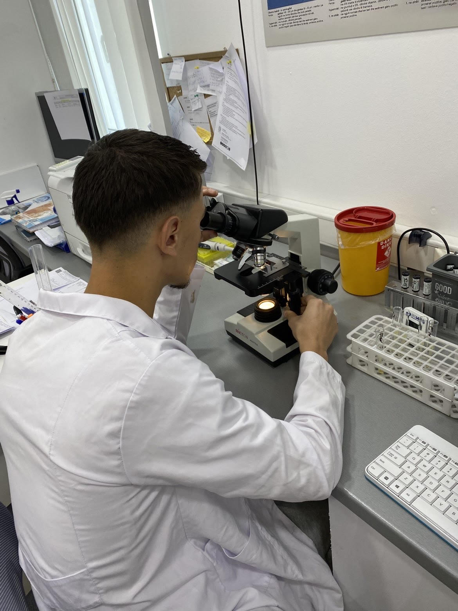

Pershendetje, une jam Fatlind Jashari
Jam student ne Biokimi, i pasionuar pas teknologjise dhe po mesoj si te behem web developer.
Qellimet e mia
- Te mesoj HTML, CSS dhe Java Script
- Te ndertoj faqe te bukura web
- Te punoj si Web Developer ne te ardhmen
Hobet e mia
Me pelqen te eksperimentoj me kod,te ndegjoj muzike dhete mesoj gjera te reja cdo dite.
Kontakti
Email:jasharifatlind@gmail.com

Shiko hobit e mia